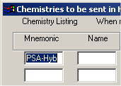
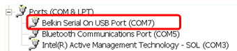
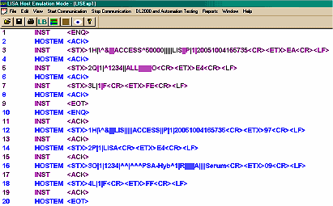
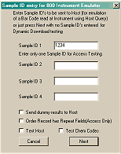
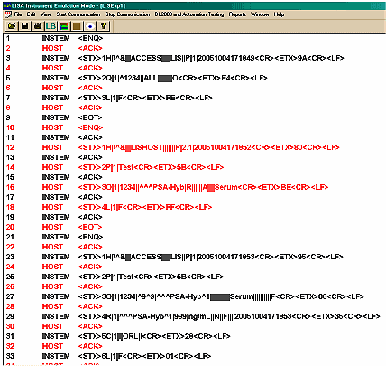

Enter the prerequisites here (optional).
This document provides instructions for using the LISA program to diagnose LIS communication issues.
For information on troubleshooting LIS issues, refer to the
Tshoot: LIS - Serial Portsdocument.
-
Install LISA - Perform these steps to retrieve and install the LISA serial communication program.
-
Open Airwatch Content Locker and go to:
-
Double-click on the file in Airwatch, and Winzip will open.
-
Double-click on the file in Winzip and installation will begin
-
Move the LISA and the LISA Help shortcuts that are created by the installation onto the desktop of your laptop to make them easy to find.
-
Choose Chemistries - Perform these steps to choose the chemistry set file that will be used during Access or Host emulation.
-
Double click the LISA shortcut icon to launch the LISA program.
-
Select
from the menu at the top of the LISA program.
- If only PSA-Hyb is listed, then continue to step 7.
- If any other tests or no tests are listed, then continue to step 3.
-
Select the
Open button on the right side, then select
IAQuick.chl.
-
Delete all tests except PSA-Hyb.
Note: When LISA uses this file, only one rep of PSA will be requested for each sample.

-
Select
Save, choose file name
AccQuick.chl, then
Save, and respond
Yes to the replace file dialog.
-
Select the
Make Default button so that LISA will always use this file.
Note: The LISA program defaults to use a LX20 chemistry file when initially installed.
-
Click
OK to close the window
-
Start LISA Host Emulation - Perform these steps to run the LISA serial communication program.
-
Connect the appropriate cables:
- a crossover serial cable from the COM 2 port on the Access2 PC to the COM 1 port on the laptop or
- a patch cable from the COM 2 port on the Access 2 PC to a serial adaptor on the laptop.
Note:
- The LIS connection is located on the instrument for Access Base.
- The LX20 service kit contains a suitable serial crossover cable.
- Crossover means that the transmit pin (#2) on one end of the cable is connected to the receive pin (#3) on the other end.
-
Select
(not the - WIZARD) from the menu at the top of the LISA program.
-
Select the ASTM protocol in the Communication Parameters window.
-
Select the Baud Rate that matches the configuration of the instrument.
-
Select the appropriate Communications Port (options 1-10 at the bottom of the window) for the laptop.
Note: Typically COM 1, but may be another COM when using a USB adaptor. To identify the number of the Communications port:
- On the laptop, select
.
- Choose the Hardware tab.
- Choose Device Manager button.
- Select the + next to Ports to expand the selection.
- Look for the Belkin adaptor under ports. The port will be listed in parenthesis after the adaptor.

-
Select
Next to finish. The LISA program will now reply to test queries from the instrument.
Note: The LISA program will now be waiting for communication.
-
Troubleshoot Communication - Perform these steps to troubleshoot communications using LISA.
-
Select
from the Access2 User Interface Main Menu.
-
Select
Query for Tests, enter an ID number (request1234) and press OK.
-
The LISA program will display the request message text and return a request for one PSA test on the sample (request1234).

Note:
- If there is no communication <ACK> from the instrument, then select Start Communication >> Host Emulation in LISA again and confirm or modify the cable type, cable connections, baud rate, and laptop COM port settings.
- If PSA is not enabled for this instrument, then the Access will generate an event log.
-
A successful query and test request dialog indicates that the instrument is communicating properly.
-
Troubleshoot Host - Perform these steps to troubleshoot LIS Host communications using LISA.
-
Select Stop Communication in the LISA menu or exit and restart the LISA program.
-
Connect the appropriate cables:
- a crossover serial cable from the COM 2 port on the Access2 PC to the COM 1 port on the laptop or
- a patch cable from the COM 2 port on the Access 2 PC to a serial adaptor on the laptop.
-
Caution: Do Not Use a real sample/patient ID for the test as the result uploaded may be mistaken for a real result.
Create an order entry at the LIS Host for a sample with a dummy sample ID (request1234) and request a test for the sample.
-
Select
from the menu at the top of the LISA program.
-
Select the
ASTM protocol, the
Baud Rate that matches the configuration of the instrument, and the appropriate
Communications Port (options 1-10 at the bottom of the window) for the laptop, then select Next.
-
Caution: Do Not Use a real sample/patient ID for the test as the result uploaded may be mistaken for a real result.
Enter the
sample ID (request1234) to be sent to the host. (for emulation of a bar code read at instrument using host query)

Note: "Send dummy results to host" should not be check marked unless the dummy test has been specifically created to test the upload capability.
-
Select
Next. The LISA program will Query the host as if a bar code was just read. The Host should respond with the programmed test request. LISA will then send a result for the test back to the LIS Host.

Note:
- If there is no communication <ACK>, then select
Instrument / Datalink Emulator again and confirm the cable type, cable connections, baud rate, and laptop COM port settings.
- The LISA Help application provides detailed instructions for using specific LISA functions.
-
A successful query and test request dialog indicates that the Host is communicating properly.
-
Escalating LIS Issues
-
Troubleshoot LIS issues using the
Tshoot: LIS - Serial Portsdocument.
-
Contact STS for additional assistance.
Note: The communication data stream can be captured into a log file and sent to STS (who can escalate to an LIS specialist) for analysis on proper field information setup. This is often helpful for new instrument installs, new LIS installs, or for intermittent problems such as missing test downloads, assay name spelling errors, and incorrectly configured, or missing LIS information.